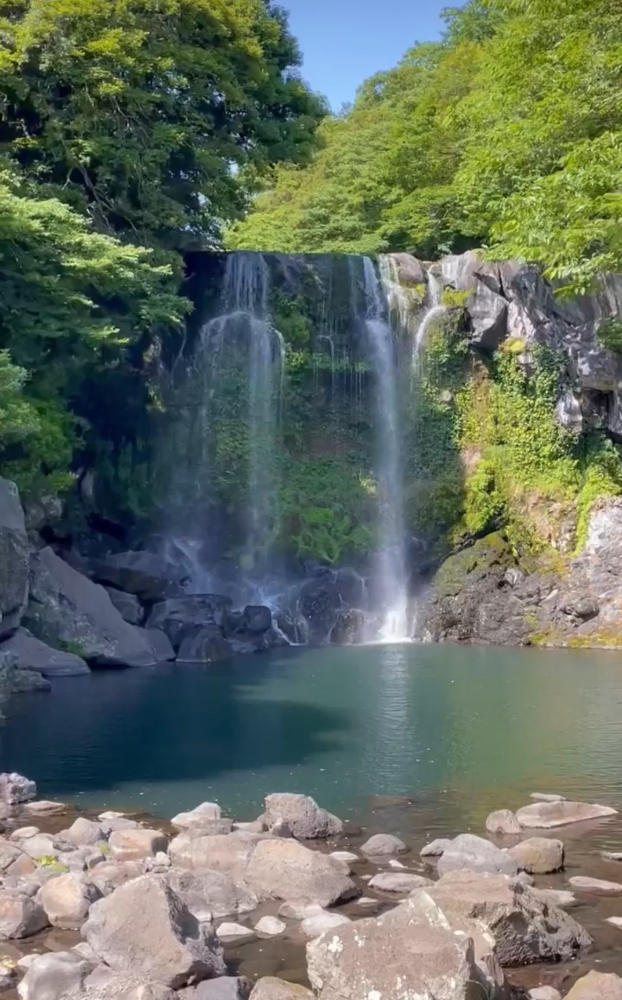
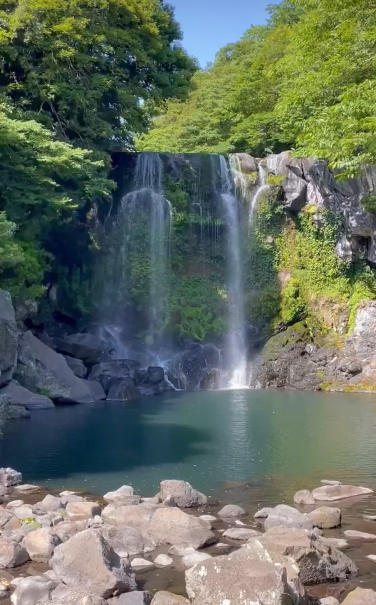

Waves of the South Korean coast lie a gem unlike any other, Jeju Island. How my heart swells with love whenever I think of this enchanting paradise! Unlike bustling cities with towering skylines, Jeju offers a serene escape where time seems to slow down and nature's beauty takes center stage.
One of my favorite memories on Jeju is trying Korean BBQ featuring their black pork. Believe me when I say, this pork belly is like no other. Its flavorful, melt-in-your-mouth texture is like no other, even when compared to the places in Seoul. Jeju truly stands out as the best.
But Jeju isn't just about the food. Seongsan Peak is a must visit, where I embarked on a ferry ride to the adorable Udo Island. Each moment felt like a scene from a fairytale. From the majestic Sojeongbang Falls to the waters of Hwanguji Natural Pools, and the vibrant colors of the Hydrangea Flower Fields painting the landscape with hues of pink and blue, all these sights left me in awe of Jeju's natural wonders.
Jeju, you stole my heart with your beauty and charm! Each moment spent on your shores felt like a love story unfolding, leaving a mark in my heart. Saying goodbye to this enchanting island, I carry with me memories that will forever warm my heart and a longing to return to your embrace, my beloved Jeju.
 }})